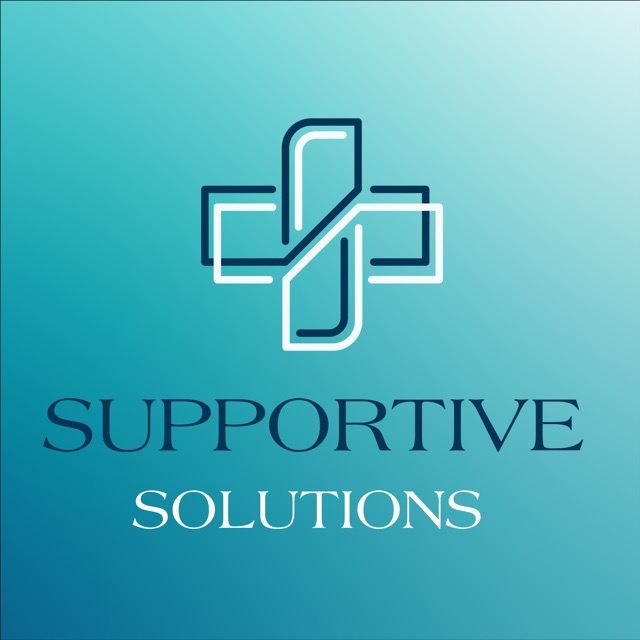

Evidence-based support designed to build meaningful skills and improve everyday life.
Applied Behavior Analysis (ABA) is a scientifically supported approach that focuses on understanding behavior and how it is influenced by the environment. ABA is widely used to support individuals with autism and other developmental differences by teaching new skills and reducing behaviors that may interfere with learning.
Our services are based on the principles of Applied Behavior Analysis (ABA), an evidence-based approach recognized under the Ontario Autism Program (OAP). ABA focuses on improving meaningful skills such as communication, social interaction, daily living, and independence.
Services are delivered by trained behavior therapists with experience supporting individuals with autism and developmental needs. Programs are individualized based on each person’s strengths, needs, and goals, and are implemented using proven ABA strategies.
We use ongoing observation and data collection to monitor progress and adjust strategies as needed, ensuring that each individual continues to build skills in a consistent and supportive way.
ABA therapy begins with understanding each individual’s strengths, needs, and goals. Sessions are structured but flexible, using positive reinforcement to teach meaningful skills step by step.
Identify strengths, needs, and areas of focus.
Personalized, measurable goals are created.
Skills are taught using structured ABA strategies.
Data is collected to ensure meaningful progress.
Each program is tailored to the individual and may focus on areas such as communication, behavior regulation, social skills, and daily living skills. Goals are broken down into manageable steps and taught using positive reinforcement and structured teaching methods.
Our approach emphasizes collaboration with families to ensure that skills learned during sessions can be applied in everyday life at home and in the community.
ABA therapy can support a wide range of developmental and behavioral needs, including:
• Communication & language development
• Social skills and peer interaction
• Daily living skills (toileting, dressing, hygiene)
• Emotional regulation and coping skills
• Reducing challenging behaviors
• Attention, focus, and learning readiness
• Building independence at home and in the community
Families may be able to use Ontario Autism Program (OAP) funding to access services, depending on their individual plan and eligibility.